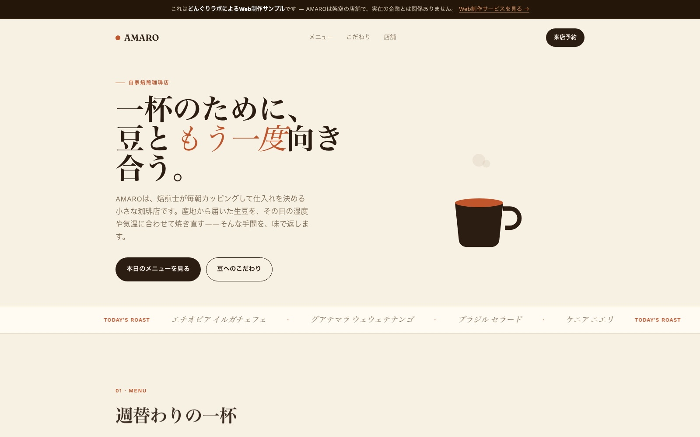
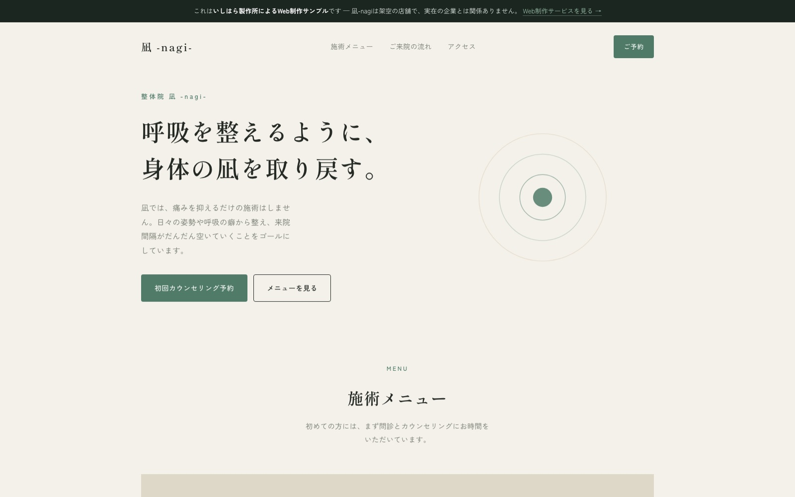
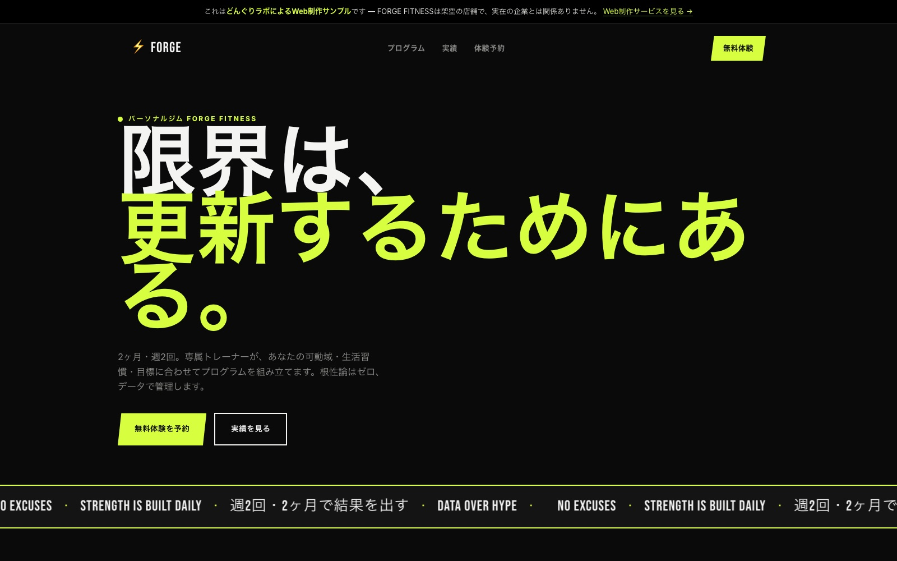
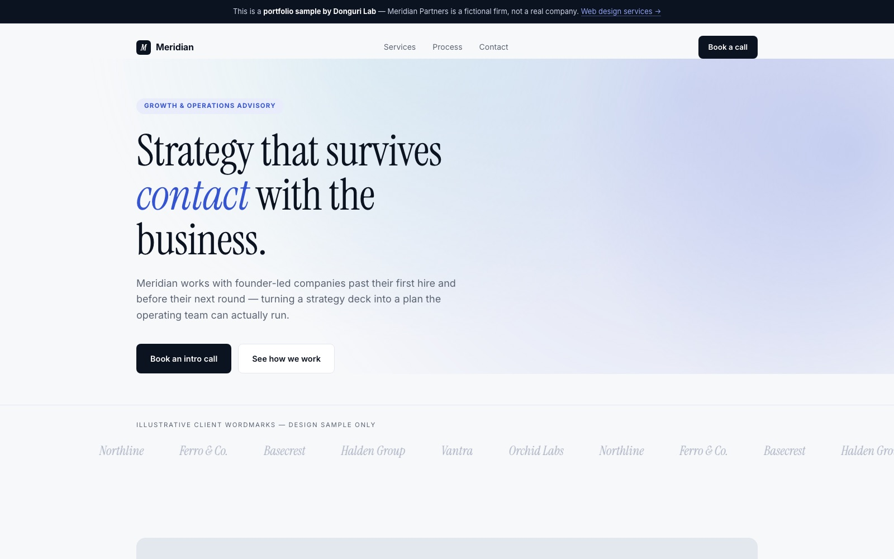

02
HP・LP制作サンプル
Web Design Samples
架空クライアント向けに作成したデザインサンプルです（実在の企業・個人とは関係ありません）。クリックすると実際に動くページが開きます——スマホでの見え方もそのままご確認いただけます。ご依頼・お見積りは無料、下のフォームからどうぞ。
Mockup samples for fictional clients (not affiliated with any real business). Click to open the live page. Quotes are free — use the form below.

作家・イラストレーター向けFor illustrators落ち着いた黒基調、明朝体で世界観を見せる構成Dark, editorial, serif-led
実際のページを開く →Open live demo →

配信者・VTuber向けFor streamers / VTubers淡色グラデーション、配信スケジュールと実績を前面にSoft gradients, schedule-first
実際のページを開く →Open live demo →

個人店・実店舗向けFor shops / small businesses生成り色と明朝体で、手仕事の温かみを表現Warm, craft-oriented
実際のページを開く →Open live demo →

イベント特設サイト（VTuber・エンタメ）Event microsite (VTuber / entertainment)カウントダウン・出演者・チケットまで。背景の星は画像を使わず計算描画Countdown, cast, tickets. Starfield drawn in code — zero image files
実際のページを開く →Open live demo →

インディーハッカー・SaaS向けFor indie hackers / SaaS foundersダーク基調＋アンバー、動く製品モックで機能を見せる構成Dark UI, amber accent, animated product mock
実際のページを開く →Open live demo →

カフェ・飲食店向けFor cafés / restaurants温かみのある生成り色、湯気アニメーションで五感に訴える構成Warm cream palette, animated steam rising from the hero mug
実際のページを開く →Open live demo →

整体院・クリニック向けFor clinics / bodywork studiosセージグリーンと明朝体、呼吸のように脈動する円で安心感を演出Calming sage palette, a slow breathing pulse animation in the hero
実際のページを開く →Open live demo →

ジム・パーソナルトレーニング向けFor gyms / personal training黒×ライムグリーン、カウントアップする実績数字とスクロール演出Black + lime, kinetic type with count-up stats on scroll
実際のページを開く →Open live demo →

士業・経営コンサル向けFor consultancies / professional servicesネイビー×セリフ体、ゆっくり動くグラデーションで説得力を演出Navy + serif headlines, a slow-drifting gradient mesh in the hero
実際のページを開く →Open live demo →
美容室・サロン向けFor hair & beauty salonsアイボリー×ゴールド、金色の粒子が揺らめく上品な構成Ivory + gold, drifting shimmer particles for a refined feel
実際のページを開く →Open live demo →
ご依頼の流れ
How it works
1
無料相談・お見積りFree consultation & quote
メールでご要望をヒアリング。目的・参考サイト・素材の有無を伺い、無料でお見積りします。
Tell me your goals, reference sites, and materials by email — I'll send a free quote.
2
デザイン案のご提示Design preview
ご契約後、3営業日以内に実際に動くプレビューURLをお送りします。
A live preview URL within 3 business days of starting.
3
修正（2回まで無料）Revisions (2 rounds free)
フィードバックを反映。大幅な仕様変更は別途ご相談です。
Your feedback applied. Major scope changes discussed separately.
4
公開・納品Launch
公開作業まで代行。納品後30日間は不具合修正無料です。
I handle the launch. Free bug fixes for 30 days after delivery.